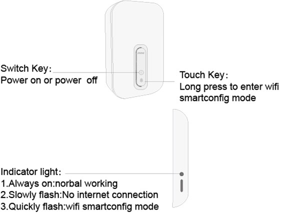
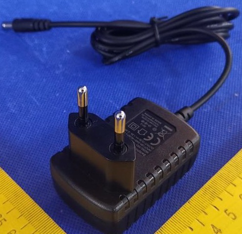
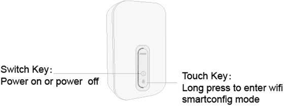

ZKOne YOLI Smart Sleep Monitor (Patient Materials)
General Device Introduction
 The YOLI Sleep Monitor uses a Wi-Fi signal (radar) for monitoring and recording respiratory rate without requiring any interaction with the device. It can sense body movement up to 3 meters from the device and can detect different sleep conditions, such as sleep apnoea.
The YOLI Sleep Monitor uses a Wi-Fi signal (radar) for monitoring and recording respiratory rate without requiring any interaction with the device. It can sense body movement up to 3 meters from the device and can detect different sleep conditions, such as sleep apnoea.
How does this device look?
The YOLI is a small white box (Figure 1) that must be connected to Wi-Fi using a separate mobile application and should be placed next to your bed at waist height, such as on a bedside cabinet (Figure 2). The device has a power button on the front that can be used for turning it off when not in use, i.e. not sleeping. The YOLI has a yellow-green light on the side that shows Wi-Fi connectivity, which will always be on when the device is working correctly, or slowly flashing when it does not have a working internet connection.
|  |  |
| Figure 1: Power button is on the front of the device and a long press can be used to configure Wi-Fi. | Figure 2: The device should be placed at waist height in your bedroom for monitoring sleep. |
What does it record?
The YOLI automatically records respiration rate of nearby people every minute during the night.
How is it used?
The YOLI should be placed near your bed, ideally on a bedside table and at waist height (Figure 2). Once it is connected to a power source and added to your home Wi-Fi, or to a Wi-Fi hotspot provided by the study phone (if no home Wi-Fi is available), it will automatically begin monitoring your sleep health. Before you go to sleep, please make sure to use the switch on the front of the device (Figure 1) to turn it on and make sure the indicator light is on and not flashing. When you wake up and start your day, please turn the device off during the day to conserve energy and data bandwidth.
Data transfer protocol for patients
As a patient: do I need to do anything on a daily basis or all N days?
Yes. You should manually connect the YOLI mobile application to your home WiFi and ensure that the YOLI device is turned on during the agreed monitoring periods and placed close to your bed. The YOLI device will automatically record your heart rate and breathing rate when turned on. Guidance for how to connect to WiFi are described below.
As a patient: do I need to do anything after each individual period of device / app use ended?
Yes. Outside of the agreed monitoring period please turn the YOLI device off by using the power button on the front of the device.
As a patient: do I need to do anything after my full periods of use of a specific device / app ends?
Yes. Please turn off the device when not being used.
Device How To setup
What sort of a device / application is this, what is it for and how does it work?
What will I need to do before I can start using this?
You will need to power on the YOLI device and connect it to Wi-Fi on its first us. The device needs to be plugged in to its associated 12V power supply as outlined below:

Any account setup required?
No. The YOLI application will come pre-installed on the provided Samsung A40 smartphone.
Connecting to Wi-Fi (first use only)
Turn on the YOLI device, then long press the touch key which is on the front of the device until the light on the side is quickly flashing. The light is quickly flash when the device is waiting to configure the Wi-Fi. Once the Wi-Fi tool application is open, you will see screenshot as below. You should then connect the YOLI device to your home Wi-Fi using the associated YOLI application on the Samsun A40 smartphone. Tap the icon on the home screen to open the mobile application:
Once open, the home screen will show YOLO Wi-Fi configuration user interface where you need to enter the name and password of your home WiFi. This is required for YOLI to automatically upload data. If you are unsure what your home WiFi SSID (name) and password are, these are typically written on the back of your router that provides Internet to your home.

If you do not have a home Wi-Fi, please enable and use the provided smartphone’s Wi-Fi hotspot as described here.
If the YOLI device does not appear, please turn the YOLI on and off from the switch:

Needs pairing with hub-device?
Yes. The YOLI application will come pre-installed on the provided Samsung A40 smartphone and needs to be used to link the YOLI device to a Wi-Fi internet connection.
Any configuration / assembly required?
Not applicable.
Troubleshooting/FAQ
The device / app seems to have stopped working: what should I do?
Battery?
Not applicable. The YOLI device uses a DC charger.
Connectivity issues?
Wi-Fi is required on the YOLI device for it to record data correctly. The LED light on the side of the device will be always on to show that it is connected to Wi-Fi and will blink slowly when the device is not connected to the Wi-Fi.
Need to restart or log in again?
Not applicable.
Does the device need to be plugged in constantly?
Yes, the device need be plugged in constantly.
Which room should it go in?
When the patient sleeps on the bed or sits in the chair, the device needs to be placed as shown in Figure. 1. Note that the patient needs to keep still (without body movement), the device can monitor the patient breath in a contactless manner. The distance between the device and the human target needs to be less than 3m.

How much memory does the ZKOne device have?
It will save 24 hours data before the device restart. (if there is no network)
What quantity of data is produced for one night sleep?
The data is saved every 2 seconds with the format (e.g., timestamp, respiration rate). The quantity of data is about 500KB for one night.
Can data be manually retrieved from the ZKOne device?
No. Data can only be retrieved from the cloud server.
Does the ZKOne function correctly without a Wi-Fi connection?
No. WiFi is required for the ZKOne YOLI Sleep monitor device to function correctly.
How can I get help with using this?
If you have any other questions or concerns, please contact your local study centre:
| Newcastle, United Kingdom | Rotterdam, Netherlands | Kiel, Germany | Muenster, Germany |
| Person Name Centre Name Location |
Person Name Centre Name Location |
Person Name Centre Name Location |
Person Name Centre Name Location |
Device return
What do I do when a period of device use is over?
Turn the device off by pressing the button on the front of the YOLI device and the light on the side will also turn off.
Before the device is returned or disposed of: does any data need to be transferred?
Not applicable. The YOLI device automatically uploads data in real-time to the YOLI services where data can be downloaded as outlined above.
Do I need to return the device somewhere?
Please contact the person that provided you with it to arrange further steps. You will have to return it by post – subject to further individual arrangement.